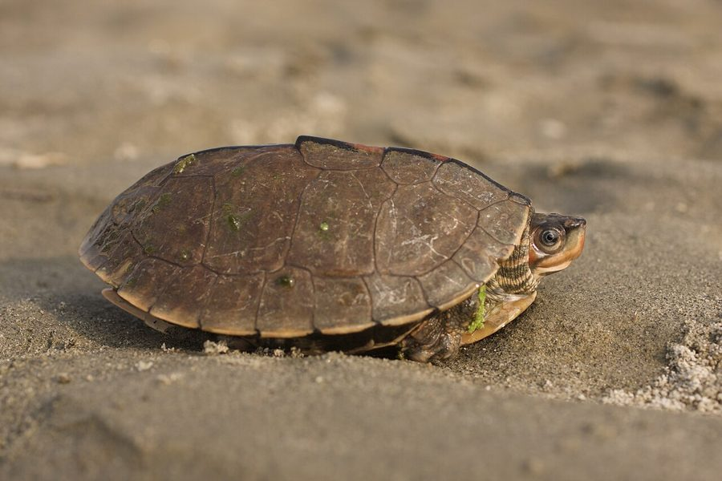

ब्राउन रूफ़्ड कछुआBrown Roofed Turtle
Pangshura smithii · Geoemydidae · REP-0039

- Scientific name वैज्ञानिक नाम
- Pangshura smithii (Gray, 1862)
- Family कुल
- Geoemydidae
- Hindi हिंदी
- ब्राउन रूफ़्ड कछुआ
- Local names स्थानीय नाम
- brown roofed turtle, turtle
- Status here यहाँ की स्थिति
- native
- Movement आवागमन
- Resident, here all year
- Known from कहाँ दर्ज
- Others have published records from the Basti–Ayodhya districts बस्ती–अयोध्या के ज़िलों से दूसरों के प्रकाशित अभिलेख
- IUCN IUCN
- NT
- Review समीक्षा
- audited and independently read
When to look कब देखें
Present all year. साल भर मौजूद।
Tell it apart from इनसे अलग पहचानें
ब्राउन रूफ़्ड कछुआ / Brown Roofed Turtle
Pangshura smithii (Gray, 1862) — Geoemydidae
ब्राउन रूफ़्ड कछुआ — नदियों और तालाबों में रहने वाला एक मध्यम आकार का कछुआ, जिसके खोल की ऊपरी सतह ऊँची और गोलाकार (domed या roofed) होती है, जिससे इसे "छत वाला" नाम दिया गया है। यह Indian Tent Turtle से मिलता-जुलता है, पर इसमें बीच में नुकीली रेखा (keel) नहीं होती। पूर्वी उत्तर प्रदेश की नदियों और जलाशयों में यह दुर्लभ है। पौधों, मछलियों और कीड़ों खाता है। बहुत शर्मीला होता है।
Quick Identification त्वरित पहचान
| Feature | Description |
|---|---|
| Size | Medium-sized turtle; carapace 16–24 cm long |
| Carapace | Domed (roofed) profile; lacks prominent central keel |
| Colour | Olive-brown to dark brown above; yellowish or pale below |
| Shape | Oval and highly domed; highest point mid-carapace |
| Head | Moderate size; eyes positioned laterally |
| Limbs | Webbed feet adapted for swimming |
| Behaviour | Aquatic; shy and retiring; good swimmer |
Field tip: A moderately-sized freshwater turtle with a distinctly domed or roofed shell. Unlike the Indian Tent Turtle, it lacks a sharp ridge and has a more rounded profile. Shy and wary; dives when approached. Found in rivers and lakes.
Morphology आकारिकी
Biometrics (typical measurements from Gangetic rivers):
| Measurement | Range |
|---|---|
| Carapace length | 160–240 mm |
| Carapace width | 130–190 mm |
| Plastron length | 150–220 mm |
| Weight | 400–750 g |
Carapace: The most distinctive feature is the highly domed profile, giving the shell a distinctly rounded roof-like appearance when viewed from the side. Unlike the Indian Tent Turtle, there is no sharp central keel, though there may be a subtle dorsal ridge. The carapace is oval and covered with concentric growth rings. The color is olive-brown to dark brown, sometimes with lighter radiating streaks on individual scutes.
Plastron: Yellowish to pale cream, sometimes with darker markings. The plastron-carapace hinge is flexible, providing some protection.
Head and neck: Head is moderate-sized with a somewhat blunt snout. Eyes are laterally positioned. Neck is reasonably long and retractable.
Limbs: Front limbs have five claws; hind limbs have four claws. Digits are webbed for swimming efficiency.
Sexual dimorphism: Males are typically smaller than females. Males have longer tails, more concave plastrons, and larger preanal scales. Females are more robust.
Behaviour & Ecology व्यवहार और पारिस्थितिकी
Strictly aquatic. The Brown Roofed Turtle spends virtually its entire life in water.
- Habitat preference: Inhabits flowing and standing freshwater bodies including rivers, streams, lakes, and wetlands. Prefers areas with aquatic vegetation and suitable basking sites.
- Aquatic activity: Strong swimmer. Uses synchronized limb movements for efficient propulsion. Can remain submerged for extended periods.
- Basking behaviour: Basks on rocks, logs, and sandbanks, particularly during early morning and late afternoon. Important for thermoregulation and shell health.
- Feeding: Omnivorous forager; feeds on aquatic vegetation, small fish, fish eggs, aquatic insects, and snails. Most actively forages during monsoon months.
- Defensive behaviour: Extremely wary of humans and larger predators. Dives rapidly into deeper water when disturbed. May withdraw into shell for protection.
- Seasonal activity: Reduced activity during winter months; may become dormant during very cold conditions.
Life Cycle / Phenology जीवन चक्र
| Season | Event |
|---|---|
| March–April | Emergence from winter dormancy; activity increases |
| May–June | Pre-nesting season; females move to suitable nesting areas |
| June–August | Nesting period; females lay 3–6 elongated eggs |
| August–October | Hatchlings emerge and disperse into water |
| October–March | Dormant period; shelter in deeper water or sediment |
Host Plants or Prey आहार
Omnivorous diet:
- Plant material: Aquatic vegetation, algae, aquatic plant seeds
- Animal prey: Small fish, fish eggs, aquatic insects, snails, tadpoles, crustaceans
- Feeding method: Forages on bottom and in vegetation; crushes hard shells with powerful jaws
Predators / Natural Enemies शत्रु
- Predatory birds: Large herons, eagles, cormorants hunt basking turtles
- Snakes: Water snakes may consume eggs or very small juveniles
- Mammals: Jackals, wild boar, and otters prey on nesting females and eggs
- Large fish: May consume hatchlings
- Humans: Collected for the pet trade; now protected
Agricultural / Human Relevance कृषि प्रासंगिकता
Ecosystem role. The Brown Roofed Turtle plays an important role in freshwater ecosystems by consuming aquatic vegetation, regulating invertebrate populations, and serving as prey for larger predators. It is protected under the Wildlife (Protection) Act 1972 and is harmless to humans and agricultural interests. Nesting sites should be protected from disturbance.
Expected Locally स्थानीय रूप से अपेक्षित
Not a field record. Written from published accounts for eastern Uttar Pradesh. No confirmed local sighting yet — if you have seen it, that is what the atlas needs.
अभी तक स्थानीय पुष्टि नहीं। यह विवरण प्रकाशित स्रोतों से है, किसी अवलोकन से नहीं।
This species is NOT a field record. The distribution below is based on published sources describing where Brown Roofed Turtles should be looked for in the Basti–Ayodhya region and where they have been recorded by herpetologists.
यह प्रजाति स्थानीय अवलोकन नहीं है। यह विवरण प्रकाशित स्रोतों से है।
Expected in rivers and reservoirs of eastern Uttar Pradesh, particularly in the Ghaghra and Rapti river systems. GBIF holds published records from the wider Awadh–Purvanchal plain, though status in Basti–Ayodhya is uncertain. The species is rarer than the Indian Tent Turtle and may be restricted to larger river systems with suitable habitat. Search along riverbanks and quiet water bodies for basking turtles during monsoon months. The first local record would be a photograph showing the distinctly domed carapace shape with place, GPS coordinates, and date.
Distribution वितरण
Global range: Endemic to India; found in eastern and central parts of the Indian subcontinent.
In India: Distributed across peninsular India and the Gangetic plains, though less widespread than related species.
In Uttar Pradesh: Resident in major river systems; less common than P. tentoria.
In Basti district / eastern UP: Status uncertain; may occur in the Ghaghra and Rapti river systems but likely rarer than the Indian Tent Turtle.
Research Questions शोध प्रश्न
- What is the population status and distribution of Pangshura smithii in the Ghaghra-Rapti river system compared to Pangshura tentoria? / क्या दोनों कछुओं की जनसंख्या समान है या एक दूसरे से अलग वितरण दिखाते हैं?
- Does Pangshura smithii show any ecological separation from Pangshura tentoria in terms of habitat preference or diet?
- What are the nesting site preferences and reproductive success rates in areas with different levels of human disturbance?
- क्या पिछली आबादी में कमी आई है और इसके कारण क्या हैं?
- How do water level fluctuations from dam operations affect basking behaviour and thermoregulation?
- Can careful identification of these two similar turtle species in field surveys help document their distributions and relative abundances?
Similar Species मिलती-जुलती प्रजातियाँ
| Species | Key Difference | हिंदी | Field Rule | |
|---|---|---|---|---|
| [[indian_tent_turtle | Indian Tent Turtle]] (Pangshura tentoria) | Similar size; has prominent central ridge (keel); carapace profile less domed | पंडुक कछुआ | Tent Turtle has a sharp tent-like ridge down the middle; Brown Roofed has a smooth domed roof. |
| Geoclemys hamiltonii ([[black_pond_turtle | Black Pond Turtle]]) | Smaller (10–15 cm carapace); darker coloration; lacks domed profile | काला तालाब कछुआ | Black Pond is much smaller and darker; Brown Roofed is larger and lighter brown. |
| [[crowned_river_turtle | Crowned River Turtle]] (Hardella thurjii) | Much larger (carapace up to 35 cm); lacks doming; different head markings | राज कछुआ | Crowned is much larger; Brown Roofed is medium-sized. |
Field rule: A medium-sized turtle with a distinctly domed or roofed carapace without a sharp ridge is a Brown Roofed Turtle. It is easily distinguished from the Indian Tent Turtle by the absence of a central ridge.
Taxonomy & Classification वर्गीकरण
Original description. The species was described by John Edward Gray in 1862 as Testudo smithii based on Indian specimens. Type locality is India. It was later moved to the genus Pangshura by Gray (1856).
Subspecies. Monotypic — no subspecies are currently recognised.
Family and order placement. Order Testudines, family Geoemydidae (Asian turtles). The genus Pangshura contains six species of Asian freshwater turtles, three of which occur in India.
Phylogenetic notes. Pangshura smithii is closely related to Pangshura tentoria and represents a similar ecological guild in freshwater systems. The two species likely diverged in the Miocene.
IUCN status rationale. Listed as Near Threatened (NT) because of its restricted range and potential population declines due to habitat modification and collection for the pet trade. In India, it is protected under the Wildlife (Protection) Act 1972.
Photo Gallery फोटो गैलरी
No photos yet — add field photos to media/species/brown_roofed_turtle/ and run node scripts/sync_photos.js.
Wanted photos:
- Dorsal view showing domed profile
- Side view showing roof-like shape
- Ventral view showing plastron
- Basking behavior
- Head detail
- Comparison with Indian Tent Turtle
References संदर्भ
- Gray, J. E. (1862). Annals and Magazine of Natural History, 9: 30.
- Smith, M. A. (1931). The Fauna of British India, Ceylon and Burma: Reptilia and Amphibia. Vol. 1 — Loricata and Testudines. Taylor & Francis, London.
- Whitaker, R. & Captain, A. (2004). Snakes of India: The Field Guide. Draco Books, Chennai.
- Moll, D. & Moll, E. O. (2000). The Ecology, Exploitation and Conservation of River Turtles. Oxford University Press, Oxford.
- IUCN SSC Tortoise and Freshwater Turtle Specialist Group (2024). Pangshura smithii. IUCN Red List of Threatened Species.
- GBIF Occurrence Data — Pangshura smithii, India (2026). GBIF taxon key: [to be filled].
Source file: species/fauna/reptiles/brown_roofed_turtle.md